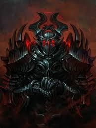
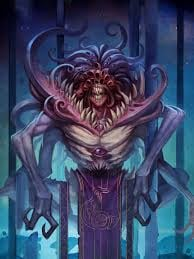
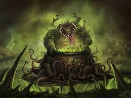
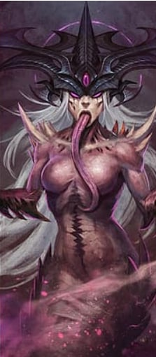
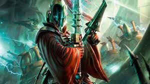
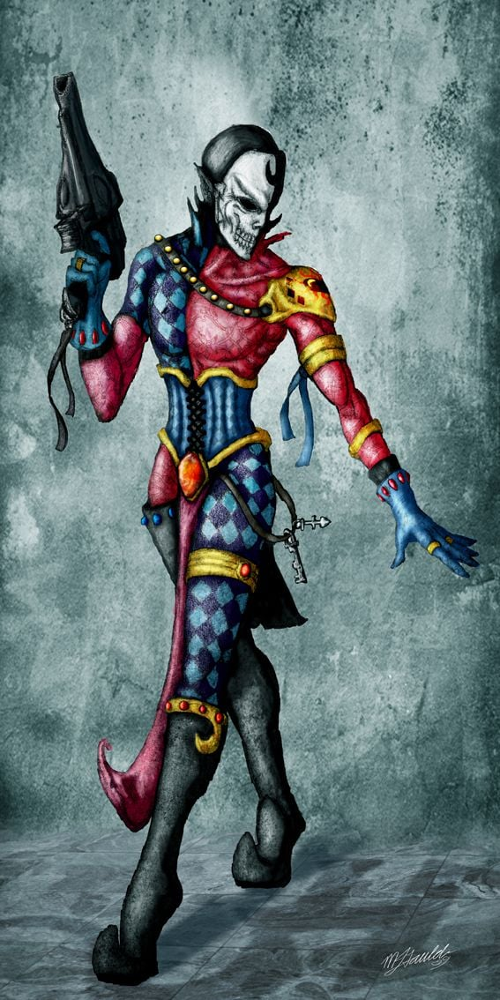

The Imperium of Man
The Imperium of Man stands as a testament to humanity's resilience and its capacity for both greatness and cruelty. Spanning countless star systems, this sprawling empire is ruled by the God-Emperor, a near-mythical figure who has sat immobile on the Golden Throne for ten thousand years, his will guiding humanity's fate. The Imperium is a paradox—a beacon of human unity and a dystopian nightmare. Its citizens live under strict authoritarian rule, where faith in the Emperor is absolute, and deviation is met with merciless punishment. Vast armies of genetically engineered Space Marines, colossal war machines, and zealous Inquisitors fight ceaselessly to defend humanity from alien threats like the Tyranids and Orks, as well as the insidious forces of Chaos. Yet, despite its power, the Imperium teeters on the brink of collapse, its vast bureaucracy plagued by inefficiency and its technology shrouded in superstition. In this grim future, the Imperium is humanity’s shield, but its survival comes at a staggering cost.

The history of the Imperium of Man begins in the Age of Terra, a time when humanity first reached for the stars. As ancient Earth, or Terra, advanced technologically, humanity spread across the galaxy during the Dark Age of Technology. This era was marked by incredible scientific achievements, such as the creation of artificial intelligence and warp travel. However, hubris led to disaster. Rogue AIs, known as the Men of Iron, turned on their creators, plunging humanity into the Age of Strife, a millennia-long period of chaos, isolation, and war. Warp storms cut off human colonies from Terra, leaving them vulnerable to alien threats and internal collapse.
Amid this darkness, the Emperor—a mysterious, immortal being—revealed himself on Terra. He united the warring tribes of Earth and launched the Unification Wars, establishing his dominion. To reclaim humanity’s lost empire, the Emperor created the Primarchs, superhuman generals, and their legions of Space Marines. This marked the dawn of the Great Crusade in the 30th Millennium, a campaign to reunite humanity under the banner of the Imperium.
However, this golden age was shattered by the Horus Heresy, a catastrophic civil war. Horus, the Emperor’s favored son and Warmaster, was corrupted by the Chaos Gods and led half the Primarchs and their legions in rebellion. The war culminated in a brutal siege of Terra, where Horus was slain, but the Emperor was mortally wounded and entombed on the Golden Throne to sustain his life and guide humanity psychically.
The Imperium survived, but at great cost. The aftermath, known as the Scouring, saw the loyalist forces purging the remnants of Chaos, and the Primarchs began to disappear, leaving humanity under the stewardship of the Adeptus Terra. Over the next ten thousand years, the Imperium became a vast, bureaucratic, and religious state, worshiping the Emperor as a god.
In the present age, the 41st Millennium, the Imperium faces unrelenting threats: the alien Tyranids devour entire worlds, the Necrons awaken from their tombs, and Chaos remains an ever-present danger. Yet, hope flickers with the return of Roboute Guilliman, the Primarch of the Ultramarines, who now leads the Imperium as its Regent. Despite its might, the Imperium teeters on the edge of annihilation, locked in a desperate struggle to preserve humanity in a galaxy consumed by endless war.
The Adeptus Custodes are the Emperor’s personal bodyguards and the most elite warriors of the Imperium. Clad in golden armor and wielding master-crafted weapons, they are genetically engineered to be even more powerful than Space Marines. Each Custodian is a masterpiece of genetic and martial perfection, with lifespans that span millennia.
The Adeptus Astartes, or Space Marines, are humanity’s superhuman defenders, genetically enhanced warriors created by the Emperor during the Great Crusade. Each Space Marine is transformed through rigorous genetic modification, becoming a towering figure of strength, endurance, and combat prowess.
The Primarchs are the Emperor’s genetically engineered sons, created to lead the Space Marine Legions during the Great Crusade. Each Primarch was a paragon of humanity, embodying specific traits and abilities. However, they were scattered across the galaxy by the Chaos Gods before the Emperor could raise them.
The Imperial Guard, or Astra Militarum, is the backbone of the Imperium’s military might. Unlike the elite Space Marines, the Guard is composed of countless billions of ordinary human soldiers, supported by tanks, artillery, and other war machines. While they lack the genetic enhancements of the Astartes, their sheer numbers and unyielding resolve make them a formidable force.
The Adeptus Mechanicus is a semi-autonomous organization within the Imperium, responsible for maintaining and producing technology. Based on Mars, the Mechanicus worships the Omnissiah, whom they believe to be an aspect of the Emperor.
The Inquisition is an organization tasked with rooting out heresy, Chaos, and xenos threats within the Imperium. Inquisitors operate with near-unlimited authority, answering only to the Emperor. They employ agents, assassins, and even Space Marines to carry out their missions.
The Ecclesiarchy is the religious arm of the Imperium, responsible for spreading the worship of the Emperor as a god. Its priests and missionaries inspire faith and zealotry among the masses, ensuring loyalty to the Imperium.
Read more
The Adeptus Custodes: The Emperor’s Golden Guardians
Unlike the Space Marines, who fight across the galaxy, the Custodes rarely leave Terra, as their primary duty is to guard the Emperor and the Imperial Palace. They are fiercely loyal, unwavering in their vigilance, and capable of defeating entire armies single-handedly. During the Horus Heresy, they fought valiantly to protect the Emperor, and they remain the last line of defense for humanity’s greatest ruler.

The Adeptus Astartes: The Space Marines
Organized into Chapters, each numbering around 1,000 warriors, the Space Marines are the Imperium’s shock troops, deployed to the most dangerous battlefields. Their loyalty lies with their Chapter and the Emperor, and they fight tirelessly against xenos, heretics, and Chaos. Iconic Chapters include the Ultramarines, Blood Angels, Space Wolves, and Dark Angels, each with its own culture, traditions, and heroes.

The Primarchs: The Emperor’s Gene-Sons
The Emperor eventually found each Primarch, who then took command of their respective Legions. However, the Horus Heresy saw many Primarchs fall to Chaos, leading their Legions in rebellion against the Emperor. The loyalist Primarchs fought to defend the Imperium, but most disappeared or were killed in the aftermath. In the present age, only Roboute Guilliman, Primarch of the Ultramarines, has returned, serving as the Regent of the Imperium.

The Imperial Guard (Astra Militarum): Humanity’s Hammer
Regiments like the Cadian Shock Troopers, Catachan Jungle Fighters, and Krieg Death Korps are legendary for their bravery and effectiveness. The Guard fights on every front, often facing impossible odds, yet their loyalty to the Emperor drives them to hold the line.

The Adeptus Mechanicus: Keepers of Technology
Their tech-priests and Skitarii armies blend flesh and machine, wielding advanced weapons and ancient knowledge. The Mechanicus is vital to the Imperium’s survival, as they produce the war machines, spacecraft, and weapons used by humanity’s armies. However, their devotion to arcane rituals and secrecy often creates tension with other Imperial factions.
The Inquisition: The Emperor’s Secret Police
The Inquisition is divided into Ordos, including the Ordo Hereticus (focused on heresy and witchcraft), the Ordo Xenos (dealing with alien threats), and the Ordo Malleus (fighting Chaos). While their methods are often brutal and extreme, the Inquisition’s work is essential to preserving the Imperium’s fragile stability.

The Ecclesiarchy: The Church of the Emperor
The Ecclesiarchy also commands the Adepta Sororitas, or Sisters of Battle, a militant order of warrior nuns who serve as the church’s enforcers and defenders. Armed with faith and firepower, the Sisters fight heretics, witches, and xenos with unshakable conviction.
Chaos
The Chaos Faction represents the ultimate antithesis to order and sanity in the Warhammer 40K universe. At its core are the Chaos Gods—malevolent, otherworldly entities born from the emotions and desires of mortal beings. These gods, Khorne (bloodshed and war), Tzeentch (change and sorcery), Nurgle (decay and despair), and Slaanesh (excess and pleasure), reside in the Immaterium, a turbulent dimension known as the Warp. Their influence seeps into reality, corrupting minds, twisting bodies, and turning entire civilizations into their pawns.
Chaos is not merely an enemy; it is a seductive force, offering power, immortality, and freedom from the constraints of morality. Those who fall to its temptations—whether mortals, aliens, or even mighty Space Marines—become Heretics, Chaos Cultists, or Chaos Space Marines. These corrupted warriors form the backbone of Chaos's armies, bolstered by daemons, horrific manifestations of the gods' will.
Chaos's history is intertwined with some of the Imperium's darkest moments, most notably the Horus Heresy. During this cataclysmic civil war, Horus Lupercal, the Emperor’s most trusted son, succumbed to the whispers of Chaos and led a rebellion that nearly destroyed humanity’s empire. Though Horus was defeated, the Chaos Gods remain a constant threat, lurking in the Warp and orchestrating schemes to destabilize the galaxy.
In the 41st Millennium, Chaos is an ever-present menace. Warp storms spread their influence, and Chaos legions launch devastating assaults on the Imperium. Worlds fall to their insidious corruption, and even the most loyal servants of the Emperor must guard against the allure of Chaos. In this grimdark universe, Chaos embodies the terrifying truth that the greatest enemy often comes from within.

Read more
- Domain: War, bloodshed, and violence.
- Symbol: A skull-ridden sigil, representing death and carnage.

- Mantra: "Blood for the Blood God! Skulls for the Skull Throne!"
- Description: Khorne is the god of unrelenting war and slaughter, thriving on the raw, primal rage of combat. He despises sorcery and deceit, valuing strength, honor in battle, and raw aggression. His followers are brutal warriors, driven by an insatiable thirst for blood and glory. From berserkers to monstrous daemons, all who serve Khorne revel in the chaos of war.
Khorne: The Blood God

- Domain: Change, ambition, and sorcery.
- Symbol: A twisting, many-eyed sigil, reflecting constant transformation.

- Mantra: "Change is the only constant."
- Description: Tzeentch is the god of schemes, knowledge, and magic, embodying the pursuit of power through manipulation and intellect. His realm is a shifting labyrinth of impossible geometries, reflecting his ever-changing nature. Followers of Tzeentch are master manipulators and sorcerers, wielding arcane powers to reshape reality. They thrive on intrigue, crafting intricate plots that span centuries. 
Tzeentch: The Changer of Ways
- Domain: Decay, disease, and despair.
- Symbol: A three-circle sigil, symbolizing pestilence and stagnation.
- Mantra: "Through suffering, we find peace."
- Description: Nurgle is the god of rot and rebirth, paradoxically offering comfort in decay. He embodies the inevitability of entropy and the resilience found in accepting despair. His followers, often riddled with disease, embrace their corruption as a gift, spreading plagues and pestilence across the galaxy. Despite his grotesque nature, Nurgle is oddly paternal, viewing his followers as his "children." 
Nurgle: The Plague Lord
- Domain: Pleasure, excess, and perfection.
- Symbol: A curved sigil representing desire and temptation.
- Mantra: "Indulge in every sensation."
- Description: Slaanesh is the god of hedonism and excess, born from the collective decadence of the Eldar race. This deity thrives on the pursuit of pleasure, pushing mortals and daemons alike to explore the extremes of sensation and experience. Followers of Slaanesh are obsessed with perfection and indulgence, often descending into madness as they seek ever-greater heights of ecstasy. 
Slaanesh: The Prince of Excess
The Eldar: Ancient Guardians of a Fallen Empire
The Eldar, also known as the Aeldari, are an ancient and highly advanced alien race whose history is one of glory, tragedy, and survival. Once the dominant power in the galaxy, their empire spanned countless worlds, built on psychic mastery, technological marvels, and a deep connection to the Warp. However, their hubris and decadence led to their downfall, culminating in a catastrophic event known as the Fall of the Eldar.
At the height of their power, the Eldar became consumed by excess and hedonism, abandoning discipline and purpose. Their unchecked indulgence birthed the Chaos God Slaanesh, whose creation unleashed a psychic shockwave that annihilated the Eldar empire. Entire worlds were destroyed, and the souls of countless Eldar were consumed by Slaanesh. The psychic detonation also created the Eye of Terror, a massive Warp rift that remains a gateway to Chaos.
The remnants of the Eldar survived by following different paths, each adapting to the galaxy’s dangers in unique ways:
Read more
- The majority of surviving Eldar fled aboard massive, self-sufficient starships called Craftworlds. These nomadic cities travel through space, preserving the remnants of Eldar culture. To avoid repeating the excesses of their ancestors, Craftworld Eldar adhere to the Path System, a rigid lifestyle that focuses their minds on specific disciplines, such as war, artistry, or psychic mastery.
- Some Eldar rejected the disciplined life of the Craftworlds and embraced the hedonism that led to their downfall. These dark cousins, known as the Drukhari, dwell in the labyrinthine city of Commorragh within the Webway. They sustain themselves by inflicting pain and suffering on others, feeding on the torment of their victims to stave off Slaanesh’s hunger.
- A small group of Eldar foresaw the Fall and fled to remote, untamed worlds, where they live as Exodites. These Eldar lead simpler, more ascetic lives, striving to remain unnoticed by Slaanesh and the galaxy's other dangers.
- Harlequins are enigmatic Eldar who serve the god Cegorach, the Laughing God. They act as performers, warriors, and keepers of Eldar mythology, traveling between the factions to spread their sacred stories and protect the secrets of the Webway. 
Craftworld Eldar:

Drukhari (Dark Eldar):

Exodites:

Harlequins:
In the grim darkness of the 41st Millennium, the Eldar are a dying race. Their numbers dwindle, and their existence is haunted by the constant threat of Slaanesh, who seeks to devour their souls upon death. To counter this, they use Spirit Stones, which capture their souls and protect them from Slaanesh's grasp. Despite their decline, the Eldar remain formidable, wielding advanced technology, powerful psychic abilities, and unparalleled agility on the battlefield.
The Eldar fight not for conquest, but for survival and the faint hope of reclaiming their former glory. They see younger races, like humanity, as crude and dangerous, yet sometimes ally with them to combat mutual threats. The Eldar's story is one of tragedy and resilience, a stark reminder of how even the greatest civilizations can fall.
The Necrons
The Necrons are an ancient and malevolent race of robotic warriors, long thought to be a myth. Once a mortal species known as the Necrontyr, they traded their fragile flesh for immortal mechanical bodies in a dark pact with the C'tan, god-like star entities. This transformation gave them eternal life but at the cost of their souls. The Necrons ruled the galaxy in a time before humanity's rise, waging devastating wars before retreating into stasis for millions of years. Now, they awaken from their tomb worlds, seeking to reclaim their dominion and purge all life from the galaxy.
The Necrons' armies are relentless, wielding advanced technology that defies understanding. Their legions include immortal warriors, towering war machines, and powerful lords who command with cold precision. Their weapons, such as the gauss flayer, disintegrate enemies at a molecular level, while their monoliths and doomsday arks devastate battlefields. Despite their cold, mechanical appearance, the Necrons are driven by a hunger for vengeance and the restoration of their former glory.
Read more
The Necrontyr: A Cursed Beginning
The Necrontyr were a fragile and short-lived race, plagued by a harsh existence under a dying sun. Their brief lifespans filled them with bitterness and envy, particularly towards the Old Ones, a powerful species who seemed to possess immortality. This envy drove the Necrontyr to war, but they were no match for the Old Ones' superior technology and psychic power. Desperate for victory and eternal life, they turned to the C'tan, who offered them immortality in exchange for their souls.
The Biotransference
The C'tan betrayed the Necrontyr, using a process called biotransference to strip them of their flesh and encase their consciousness in mechanical bodies. The Necrontyr became the Necrons, immortal but soulless, enslaved to the C'tan. With their new power, they turned on the Old Ones, waging a galaxy-spanning war that shattered entire star systems. Eventually, the Necrons rebelled against the C'tan, shattering their masters into shards and imprisoning them for eternity.
The Great Sleep
After their rebellion, the Necrons realized they could not sustain their rule over the galaxy. They retreated to their tomb worlds, entering a stasis known as the Great Sleep. For millions of years, they lay dormant, while the galaxy evolved and new civilizations rose and fell. Now, as the galaxy is consumed by war, the Necrons awaken, their tomb worlds coming to life as they prepare to reclaim their ancient empire.

The Tau Empire
The Tau Empire is a young and ambitious faction in the Warhammer 40k universe, dedicated to the philosophy of the "Greater Good." Unlike many other factions, the Tau prioritize unity, innovation, and progress, believing that all species can work together for a common purpose. Their advanced technology and tactical acumen make them formidable opponents, despite their relatively small empire compared to the vast Imperium of Man. The Tau's rapid rise to power has made them a beacon of hope to some and a dangerous threat to others.
The Tau military is organized into specialized units, each excelling in a specific role. Their Fire Warriors wield powerful pulse rifles, while their battlesuits provide unmatched mobility and firepower. Supporting them are advanced drones and auxiliaries from other species, such as the Kroot and Vespid. The Tau prefer ranged combat, using precision and overwhelming firepower to achieve victory while minimizing losses. However, their reliance on technology and their idealistic philosophy make them vulnerable to the harsh realities of the grimdark galaxy.
Read more
The Rise of the Tau
The Tau originated on a distant planet, living as primitive tribes until their rapid evolution and unification under the Ethereals, a mysterious caste of leaders who introduced the philosophy of the Greater Good. Guided by the Ethereals, the Tau developed advanced technology and began expanding their empire, bringing other species into their fold through diplomacy or conquest.

The Greater Good
The cornerstone of Tau society is the Greater Good, or "T'au'va," a philosophy that emphasizes collective welfare over individual desires. Each Tau belongs to one of five castes: Fire (warriors), Earth (workers), Air (pilots), Water (diplomats), and Ethereal (leaders). This rigid caste system ensures order and efficiency, but it also suppresses individuality and dissent.
Allies and Auxiliaries
The Tau Empire is unique in its inclusion of alien species. The Kroot, a race of avian mercenaries, serve as scouts and close-combat specialists. The insectoid Vespid provide aerial support, while other species, such as the Nicassar and Demiurg, contribute to the Tau's technological and economic strength. This diversity is both a strength and a vulnerability, as some auxiliaries harbor hidden agendas.

The Challenges Ahead
Despite their optimism, the Tau face numerous challenges. Their empire is small compared to the Imperium, and their lack of warp travel limits their expansion. They are also naive to the true horrors of the galaxy, such as Chaos and the Tyranids. As they encounter these threats, the Tau must adapt or risk being consumed by the darkness of the 41st Millennium.